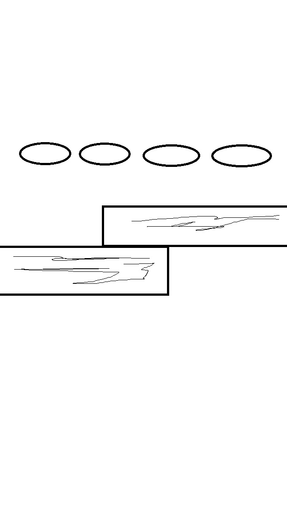
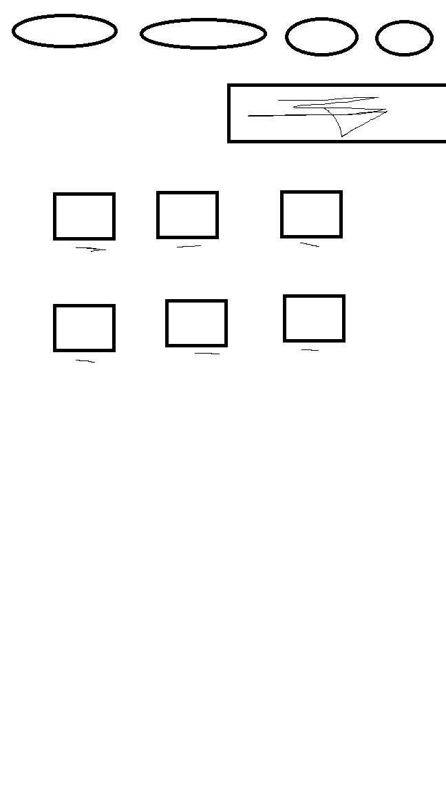

A weboldal készítésa
A célom minél átláthatóbb és letisztultabb oldalak létrehozása volt.Törekedtem viszonylag kevés szín használatára, végül a feketén és a fehéren kívül még kéket választottam, mint a háttér színe, illetve egy vöröses színt, hogy a kontrasztjával kicsit kellemesebbé tegyem a képet a szem számára. A terveket előszőr Paintben készítettem el. Az első képen látható, hogy a főoldal első "sávját" eredetileg a jobb oldalra akartam tenni, de végül áthelyeztem balra, mert szerintem így esztétikusabban néz ki. A "Képek" oldalon lévő feliratsávot is leszedtem, mivel a "Rólam" oldalon már kifejtettem, hogy mik kerültek ide feltöltése.  A készítés során a legtöbb nehézséget az oldal összképének designolása okozta, ez volt a leghosszadalmasabb és legfárasztóbb rész.Zárásképpen elondhatom, hogy elégedett vagyok weboldalam kinézetével, remélem az évek során még sok rajzot fogok ide feltölteni.